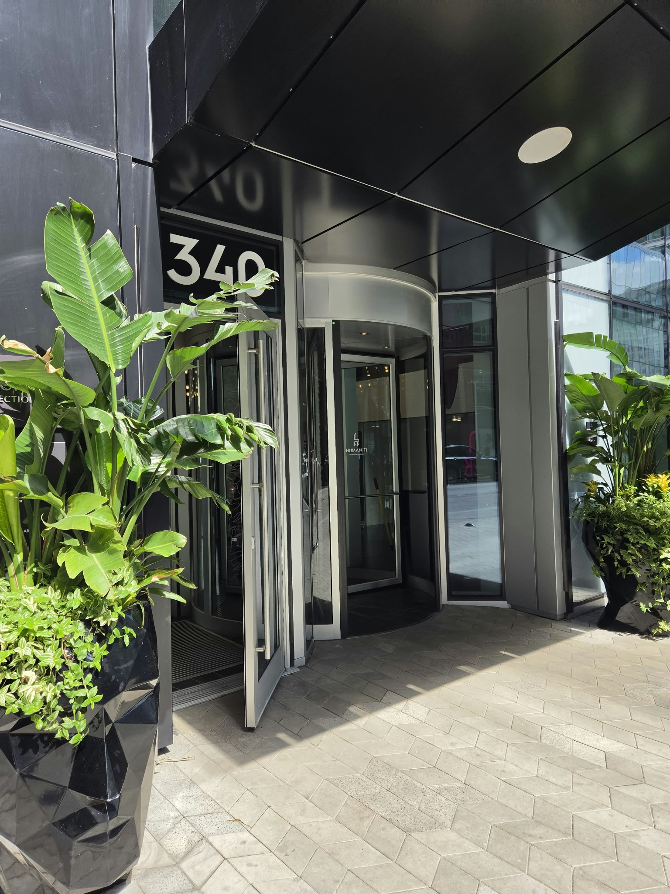
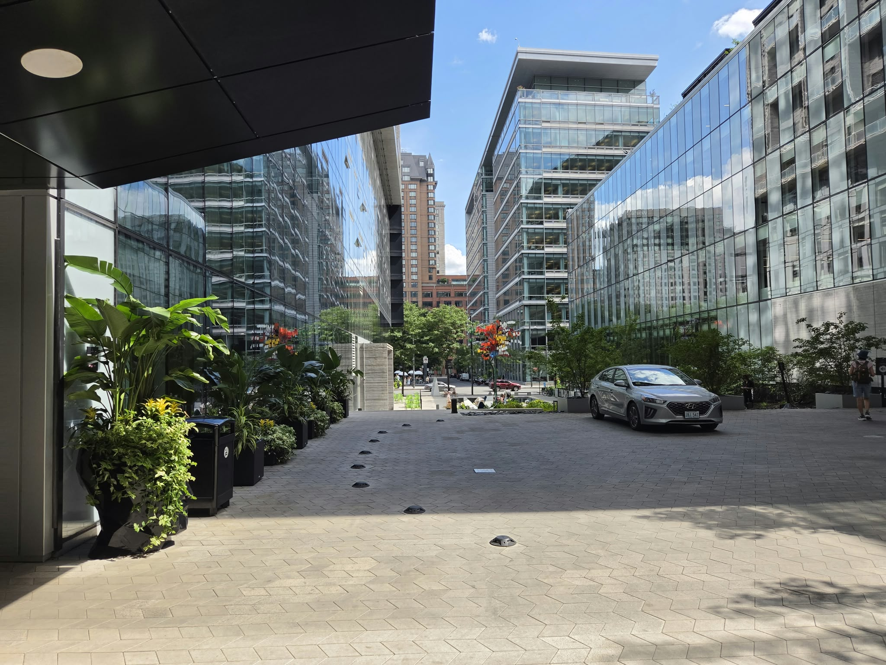
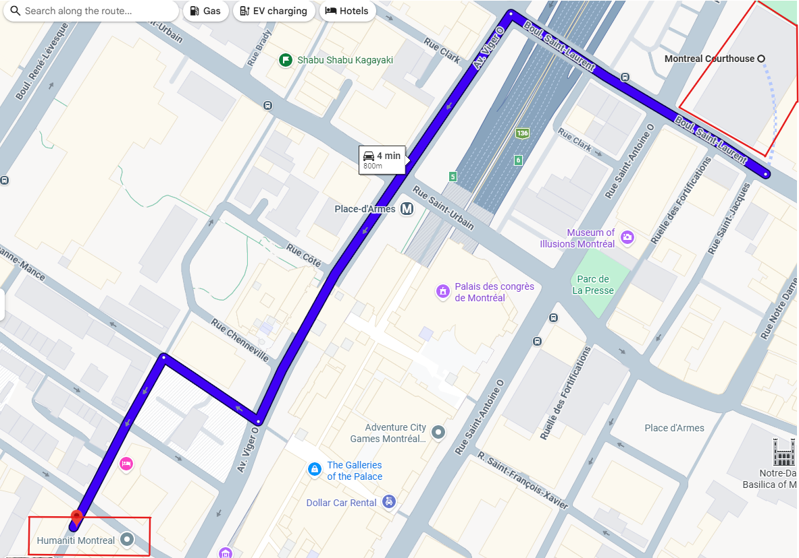
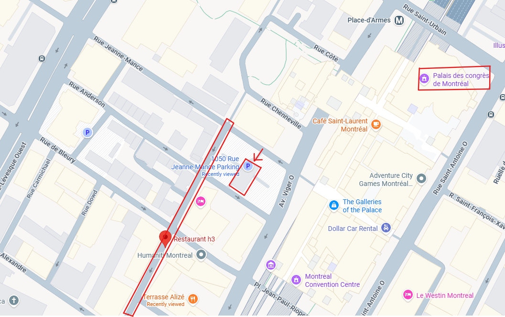

Before the wedding dinner
Terrasse Alizé
340 Rue De la Gauchetière O
9th Floor, Montréal, QC H2Z 0C3
Andrea & Maxim
Join us first for drinks on Terrasse Alizé, then for dinner at Restaurant h3.
Before the wedding dinner
340 Rue De la Gauchetière O
9th Floor, Montréal, QC H2Z 0C3
Wedding dinner
340 De La Gauchetière Ouest
2nd Floor, Montréal, QC H2Z 0C3
Restaurant entrance, route from the courthouse, and parking



